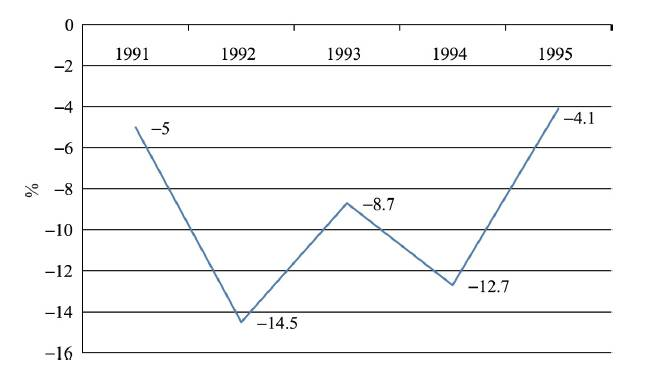
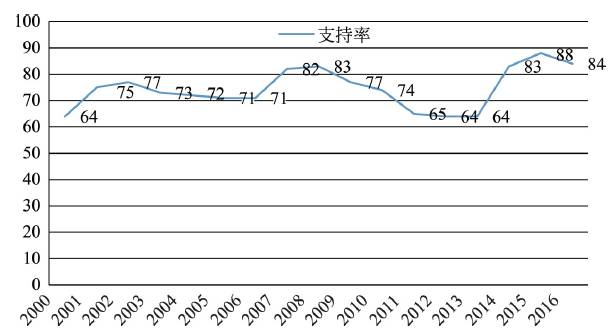

收录于合集
简
邢悦
清华大学国际关系研究院副教授，中国对外政策研究中心主任
王晋
清华大学国际关系学系硕士研究生
**
**
接上文：【大国外交】“弥赛亚意识”与俄罗斯“大国主义”外交（一）
案例分析一：叶利钦时期俄罗斯的对外政策
以下分别从叶利钦时期俄罗斯对西方政策的转变、俄罗斯对独联体国家的政策以及俄罗斯的对外决策机制三个方面来分析“大国主义”外交在俄罗斯外交中的体现。
（一） 叶利钦时期对西方政策的转变
苏联解体之后，俄罗斯从一个“领土辽阔的大帝国”变成了一个“麻烦甚多的民族国家”，不仅经济、军事实力大不如前，地缘安全也四面受敌，国际地位更是一落千丈。布热津斯基曾经这样直白地评价苏联解体之后的俄罗斯：“虽然仍拥有庞大但越来越旧的核武库，曾是世界上两个超级大国之一的俄罗斯现在却被许多人视为只不过是第三世界的一个地区性大国而已。”
由于苏联解体突如其来，出乎人们的意料，俄罗斯人在不稳定的新世界 中不知所措。这一时期，人们就俄罗斯如何进行自我定位展开了广泛的讨 论，公开和私下都在激烈争论大多数俄罗斯人以前从未想过的一些问题：什 么是俄罗斯，它是一个种族概念还是政治概念？ 俄罗斯是一个什么样的国家，它属于西方还是东方，抑或二者之间？ 俄罗斯的边界在哪里，从苏联独立出去的国家与俄罗斯是什么关系？ 此间，俄罗斯思想界可谓百花齐放，“大西洋主义”“民族主义”与“新欧亚主义”这三种曾经影响俄国家思维的思潮在新的历史条件下再次登上历史舞台，在很大程度上影响了叶利钦时期政府对外政策的选择。
俄联邦成立初期，“大西洋主义”的代表人物盖达尔和科济列夫进入俄 罗斯政府高层，在他们的影响下，叶利钦政府选择了向西方“一边倒”的对外 政策，希望通过向西方尤其是美国示好来争取它们的政治扶植和经济援助， 从而完成俄罗斯经济社会的全面转型，并完全融入西方的国家政治、经济和 安全体系。俄罗斯幻想着以“一种新的美俄民主共同统治来取代原来的美 苏争夺”。而且，“这种共同统治的范围将是全球性的，俄罗斯因此将不仅是 苏联的合法继承者，而且是在真正平等基础上全球和解的事实上的伙伴。正如俄罗斯新领导人不厌其烦地宣称的：这不仅意味着全世界应承认俄罗 斯是美国的平等伙伴，而且没有俄罗斯的参与或同意，任何全球性问题都不 能得到处理和解决”。 西方特别是美国对叶利钦有意作出的友好姿态，鼓励了俄罗斯政府部门中的“亲西方派”，美国总统克林顿提出的与俄罗斯建立“成熟的战略伙伴关系”的建议，使叶利钦产生了俄罗斯已经与美国平起平坐的幻觉。为了拉近与西方国家的距离、消除双方的隔阂，俄罗斯在诸如东欧撤军、波罗的海、核武器等重大国际问题上都作出了较大的让步。
然而，叶利钦政府倒向西方、追随西方的行为并没有给俄罗斯带来预想的好处。在经济上，叶利钦政府推行颇受西方好评的“休克疗法”，试图在短时间内改变俄罗斯的经济发展模式，但是却以失败告终。1991—1995年俄罗斯经济增长经历了较大的跌宕起伏（见图3）。与此同时，西方国家及其主导的国际组织不仅未给叶利钦政府提供其所希望的大量援助，而且还提出了一些在他们看来毫无理由的要求。事实证明，俄罗斯追随西方并期望被其接受为大国，不过是俄罗斯的“一厢情愿”。在冷战中获胜的美国当然不愿意与俄罗斯分享全球权力，因为它认为俄罗斯虚弱不堪、社会落后，根本不配充当美国的全球性伙伴。

图3：1991—1995年俄罗斯的GDP增长率
西方国家对俄罗斯居高临下甚至幸灾乐祸的态度极大地伤害了俄罗斯 人的自尊心，有着“弥赛亚意识”的俄罗斯人是不能接受被人轻视的。于是， 俄罗斯从高层到民间都开始对政府的亲西方政策表示出强烈的不满。实际 上，在这一政策刚提出时就有反对的声音，后来则有越来越多的人感到西方 是决不会给予俄罗斯以应有的尊重和平等待遇的，所谓的“战略伙伴”只是 美国故意编造出来欺骗俄罗斯的。反对派也借机向政府发起攻势，指责叶利钦在国际上充当西方的“小伙伴”，置国家利益于不顾，是彻头彻尾的“卖 国外交”。俄罗斯总统外交顾问米格拉尼扬也多次撰文批评政府的对外政 策，认为“像俄罗斯这样的大国不能如此依赖于西方到底提不提供贷款”，并称“俄罗斯还没有在国际社会中找到应属于自己的位置”。
在1993年的俄罗斯杜马选举中，民族主义激进政党获得了空前的高支持率，这一事件引起了叶利钦政府的恐慌，并促使叶利钦将“恢复俄罗斯的大国地位”作为这一时期的对外政策目标。1993年４月政府出台的《俄罗斯联邦对外政策构想》，宣示了俄罗斯将改变倒向西方的对外政策。1994年２月，叶利钦在国情咨文中指出：“俄罗斯的对外政策要永远符合俄罗斯的大国地位。”
俄罗斯对外政策的调整带来了其对外行为的变化。谋求西方的经济援助曾是俄罗斯对西方政策的主要目标之一，而在1994年俄美总统的联合记者会上，叶利钦提出：“俄罗斯将不再谋求得到人道主义救援，而是要求美国向俄罗斯打开市场并取消贸易限制。”同时，俄罗斯开始积极参加地区和国际事务，并显示出与西方对抗的姿态。1994年，南斯拉夫民族问题愈演愈烈，2月萨拉热窝发生炮击平民事件，北约迅速介入，俄罗斯总统和外长多次发表公开谈话，称不能容忍北约在俄罗斯势力范围内采取单方面行动，并称要推迟加入"和平伙伴"计划。 面对俄罗斯的强硬态度，西方国家在处理版图划分问题时开始考虑俄罗斯的意见，并搁置了解除穆族武器禁运的计划。此外，在西方国家最为关心的防止核扩散问题上，叶利钦也表现出强硬的姿态，1995—1996年，叶利钦几次坚决反对美国阻止俄罗斯与伊朗进行核交易的努力，迫使西方七国集团同意采取其他步骤加强核安全。除此之外，在巴以问题、朝鲜半岛问题上，俄罗斯都开始与西方较量，试图在这些问题上加强俄罗斯的影响力。
在1996年连任竞选中，叶利钦仍撤换了外交部长科济列夫，尽管科济列夫已开始对西方的行为采取批评态度。新任外交部长普里马科夫是杜马内部的共产党人和民族主义者都能接受的人物，他上任后多次表示：“俄罗斯是一个大国，它不能扮演跟在飞机后面飞行的僚机角色。”普里马科夫上任标志着俄罗斯彻底放弃了亲西方的对外政策。此后，俄罗斯开始实行东西方兼顾的全方位对外政策，即所谓的"双头鹰外交"。
叶利钦时期俄罗斯对西方政策的转变说明 ，俄罗斯不论处于何种境地， 都自视为一个具有特殊地位的大国，不能容忍被西方视为二流国家。西方的不信任和不尊重是导致俄罗斯改变对西方政策的主要原因。同时，俄罗斯也从这段经历中得到了教训，那就是不能有求于西方、不能寄希望于西方，俄罗斯对西方越软弱，就越被西方看不起。
（二）叶利钦时期对独联体国家的政策
苏联解体后，如何处理与前苏联各加盟共和国即已经独立为主权国家的“近邻外国”的关系，是俄罗斯面临的一个重大课题。“与美国共享全球性大国地位的幻想，使莫斯科的政治精英很难放弃在前苏联地区，甚至在前中欧卫星国家中建立俄罗斯特殊的地缘政治地位的思想。所以，即使在俄罗斯全面倒向西方时，叶利钦政府仍然对"近邻外国”采取了十分强硬的“大国主义”政策，就连科济列夫也曾表示：“俄罗斯必须在几个世纪以来一直是俄国利益范围的地区内保持军事存在”，“如果放弃了几个世纪以来在近邻国家中的影响力，那么俄罗斯将面临灭亡的危险。”
俄罗斯对近邻国家发起“大国外交”攻势的主要方式是通过签订各种条约和组建联盟，承诺为独联体国家提供公共产品，从而将这些国家控制在俄罗斯的影响力之下。1992年，俄罗斯与哈萨克斯坦、吉尔吉斯斯坦、乌兹别克斯坦、塔吉克斯坦、亚美尼亚５国签署了《独联体集体安全条约》，俄承诺向其他成员国提供国家安全保障，同时还通过了一系列边界条约，向独联体国家派驻一定数量的边防部队。通过《集安条约》，俄罗斯成功地将独联体国家纳入以俄罗斯为核心的一体化“联盟空间”之中。
同时，俄罗斯对北约东扩表现出极大的警惕和担忧，认为这是美国对俄罗斯势力范围的侵犯。即便是叶利钦政府中亲西方的民主派也认为，北约东扩将意味着俄罗斯被排斥在欧洲之外，被认为没有资格参与欧洲文明的机制化框架。“文化上的不安全感加上政治上的担忧，使俄罗斯感到北约扩大似乎是西方蓄谋已久的对其孤立政策的顶峰，使俄罗斯在世界上孤立无援，十分易受多种敌人的攻击。”所以，俄罗斯多次向西方谈到本国在前苏联地区保持军事存在的重要性，并指责西方向乌克兰及其他新独立国家提供援助是反俄政策。
1994年4月８日的《消息报》称，俄罗斯成功地在新独立的各共和国领土上保留了至少２８个军事基地。美国学者注意到，如果在地图上把俄罗斯在这些地区的军事存在用线连起来，实际上大体与苏联的外部边界相当。1995年９月，叶利钦在发表的关于独联体政策的官方文件中称：“俄罗斯对独联体政策的主要目标，是建立一个能在国际社会上占有适当位置的政治、经济一体化的国家联盟，以巩固俄罗斯在后苏联空间建立的国家间政治经济关系新体系中的领导地位。”1996年普里马科夫担任外交部长后，将俄罗斯的对外政策目标概括为四点，其中前三点都是关于如何加强俄罗斯与独联体的一体化和保持地区稳定、防止地区冲突等问题。同时，他上任后首次出访选择的也是独联体国家。
从俄罗斯对独联体的政策中可以看到，苏联虽然解体了，但俄罗斯仍有挥之不去的帝国心态，仍以强调独联体对俄罗斯的特殊意义来保持自身在中东欧的特殊影响力，以维护其作为大国的地缘政治资本 。
（三）叶利钦时期的对外决策机制
叶利钦虽然在对外政策上有亲西方的倾向，但是他本人完全符合俄罗斯人对“强权领导”的期盼。在漫长而曲折的政治生涯中，叶利钦从来没有做过副手，这种特殊的政治经历让叶利钦形成了一种果敢、独断的风格，这种风格在他推动苏联解体、炮打白宫等一系列事件中得到了充分的显现。
叶利钦时期的对外决策权高度集中在以他为中心的极小的领导团体内。俄罗斯联邦成立之后，虽然在政治上效仿西方国家建立了三权分立的民主制度，但是国家权力仍然高度集中在总统手中，总统在对外决策和政策执行上拥有无可置疑的权力。根据1993年新宪法，俄罗斯总统在外交上享有以下权力：第一是立法提案权。根据宪法，“总统有权向国家杜马提出法律草案”，这意味着总统有合法的途径将自己的意愿上升为代表国家意志的法律。第二，宪法规定总统须“每年向联邦议院提交一份论述国内形势国家内外政策主要方针的咨文”，但议院没有审议权，只有听取咨文的权力。第三，俄联邦总统还拥有签署法律、发布命令等权力。宪法规定，“俄罗斯联邦总统作为国家元首，在国内和国际场合代表俄罗斯联邦”，“主持谈判并签署俄罗斯联邦国际条约；签署批准书；接受外国使节的到、离任国书”。第四，宪法还赋予总统任命干部的权力。包括联邦总理、副总理和部长、外交代表在内的联邦重要人员的任免权实际上都掌握在总统手中，总统还可以组成总统办公厅，这对国家对外政策的制定与具体执行都产生着近乎决定性的影响。
毫无疑问，叶利钦时期，国家的对外决策权牢牢地掌握在总统手中，不过，尽管大权在握，叶利钦却缺少进行对外决策和外交活动的能力，“他所受的教育和生活经历与外交活动所需的高深知识之间距离很远”。这导致了叶利钦执政初期在外交活动上对时任外交部长科济列夫的过度依赖。作为"大西洋主义”的主要代表，科济列夫的亲西方观念直接影响了俄罗斯早期亲西方政策的形成。而由于这一政策并未达到预期目的和国内“弥赛亚意识”的觉醒，以及国内反对声音的高涨，最终让叶利钦不得不反思其对外政策，并将本已转变亲西方政策的科济列夫免职。可以说，在名义上已经实行了民主的俄罗斯，叶利钦仍然牢牢掌握着外交上的决定权。
案例分析二：普京时期俄罗斯的对外政策
以下分别从普京时期俄罗斯的国家定位、俄罗斯对独联体国家的政策、俄罗斯的对美政策和总统的对外决策权力四个方面来分析“大国主义”在俄 罗斯外交中的体现。
（一）普京时期俄罗斯的国家定位
1999年12月31日，叶利钦辞去总统职务，次年3月，俄罗斯总统选举提前进行，普京当选为俄罗斯的新总统，自此，俄罗斯开始了“普京时代”。普京完全符合俄罗斯人心中的“好沙皇”的形象，他颇具俄罗斯风格的治国 理念、外交思想和“大国主义”作风，在俄罗斯的历史上留下了浓墨重彩的 一笔。
普京当选总统之时，俄罗斯内忧外患，面临严峻的国内国际环境。国内 经济发展水平继续下降，工业、民生和投资等领域受到严重冲击，公民的健康状况严重恶化、平均寿命缩短；与此同时，西方国家积极推行北约东扩，进 一步挤压俄罗斯的战略空间，俄罗斯在外交上陷入孤立无援的困境 。然而， 面对如此严峻的局势，普京却表现出了超常的冷静、坚定、自信和果断。他 意识到传统文化对俄罗斯深厚而持久的塑造和引领作用，希望通过弘扬东 正教文化尤其是“弥赛亚意识”来唤起俄罗斯的民族凝聚力。于是，他提出 了“俄罗斯新思想”，称“俄罗斯新思想是将全人类共同的价值观与经过实践考验的俄罗斯传统价值观，尤其是经过２０ 世纪波澜壮阔的１００ 年考验的价值观有机地结合在一起”。尽管人们对俄罗斯的传统价值观有不同的解释，但毫无疑问，强国意识是其中最重要的内容。所以， 普京将恢复俄罗斯 的大国地位作为外交主要目标，并确立了国家未来发展的强国战略，多次在 正式场合和正式文件中表达了俄罗斯要成为世界强国的思想 。
普京在《千年之交的俄罗斯》一文中阐述了俄罗斯传统文化中的强国意 识，他说：“俄罗斯过去是，将来也还会是一个伟大的国家。它的地缘政治、经济和文化的不可分割的特征决定了这一点。在俄罗斯的整个历史进程 中，它们还决定着俄罗斯人的思想倾向和国家的政策。即使在今天，它们依然起着决定性的作用。”
在2000年发布的《俄罗斯对外政策构想》中，这种“大国意识”表现得更为明确，该《构想》称：“确保国家安全和主权，提高俄罗斯在国际社会中的地位，是俄罗斯外交的根本目的，而这种地位应该最大程度地符合俄罗斯作为世界大国的利益。”同年７月，在题为《俄罗斯国家：强国之路》的国情咨文中，普京提出：“俄罗斯唯一现实的选择是成为一个强国”，“只有成为强国， 才能解决俄罗斯社会现在面临的诸多问题与挑战”。在次年的国情咨文中，普京再次强调了“大国地位”对俄罗斯的重要性。
在“梅普共治”时期，俄罗斯的“大国意识”丝毫没有减少。随着俄罗斯经济的大幅度恢复，这种“大国心态”越发强烈地表现在国家的对外政策当中 。2008年的新版《俄罗斯对外政策构想》指出，俄罗斯外交方针的基本目标是：“确保俄罗斯在国际社会中牢固的权威地位，这种国际地位最大程度上符合俄罗斯作为当今世界有影响力的中心的利益，也是俄罗斯的政治、经济、人文和精神潜力发展必不可少的”，“俄罗斯作为最大的欧亚强国的地缘政治地位、世界大国和联合国常任理事国的地位，决定了平衡性和全方位性是其对外政策的突出特点”。
总之，自2000年起，在普京的两届总统任期、之后的“梅普组合”以及2012年普京再度出任总统的十余年间，俄罗斯的对外政策始终以振兴其大国地位为核心，实行务实的、东西方兼顾的全方位外交，以维护俄罗斯的国际地位和国家利益 。
（二）普京时期对独联体国家的政策
苏联解体后，俄罗斯将独联体地区视为其“特殊利益”，继续在原苏联地 区推行“大国外交”，不允许任何其他势力染指。为了加强对该地区国家的 实际控制，普京上台之后在军事、经济、政治等方面积极推动独联体地区国家的一体化，尤其是军事防务一体化进程。2001年5月，以“集体安全条约成员国快速反应部队”的建立为契机，俄罗斯陆续在阿塞拜疆等独联体国家设立军事基地。这些军事基地的作用，一是保证俄罗斯的军事内需（如白俄罗斯和阿塞拜疆的雷达站就是俄国家反导预警系统不可或缺的组成部分）；二是为了维和，即一旦独联体国家之间爆发冲突，俄罗斯就可以“大家长”的身份派兵进行维和调解工作。在经济方面，普京利用俄罗斯的能源优势，牢牢地掌控着对中亚地区的主导权。２０００年３ 月，俄、哈、土、乌四国宣布成立“天然气联盟”，俄罗斯积极参加这些国家的能源开发并严密防范外来竞争。2001年，俄罗斯联合哈、白、吉、塔五国成立了“欧亚经济共同体”，该委员会的表决原则给予俄罗斯比其他成员国更大的表决权，这显示了俄罗斯对该组织的实际掌控。
在推动独联体经济军事一体化的进程中，普京不时使出“大棒政策”，以维护俄罗斯在独联体地区的绝对主导权，为此，他甚至不惜干涉独联体国家的内政和牺牲这些国家的主权。例如，在俄格关系的处理方式中，普京政府就展示了其颇具“苏联遗风” 的强硬和霸道。2002年，在车臣恐怖分子劫持莫斯科剧院之后，普京发表声明警告格鲁吉亚，称如若格没有能力制止恐怖分子从其领土上对俄罗斯发起进攻，俄罗斯将对格境内恐怖分子的军事基地实施直接军事打击。2003年10月，为了实现对独联体国家的有效控制，俄罗斯出台了“越境打击”“先发制人”等军事学说，这些强硬举措激发了格鲁吉亚人民对俄罗斯的反弹情绪。当年11月，格鲁吉亚发生“颜色革命”之后，俄格矛盾进一步激化，格鲁吉亚政府和人民彻底坚定了投靠北约的决心，将加入北约提上日程。俄罗 斯政府对此颇为不满，对格鲁吉亚采取了严厉的制裁措施，同时还在其周边的地域和水域举行军事演习。2008年8月，俄联邦议会宣布承认格鲁吉亚的两个自治共和国阿布哈兹和南奥塞梯独立，这实际是堵上了格鲁吉亚加 入北约的大门。
在俄白关系中，俄罗斯同样显示了“大国主义”和“帝国情结”。普京上任后大力推进俄白联盟的进一步发展与深化。2002年，普京曾提议白俄罗斯以第七个行政区的方式无条件并入俄罗斯，或是按照欧盟模式与俄罗斯建立联邦制国家，实际上就是让白俄罗斯向俄罗斯让渡部分主权。白俄罗斯总统卢卡申科拒绝了这样的提议并多次申明：“白俄罗斯在任何情况下都不会加入俄罗斯联邦，因为白俄罗斯是一个独立国家。”此后，卢卡申科提出以进一步完善联盟建制的方式推进俄白关系，并强调俄白两国在联盟关系中的平等地位与权利。但这一提议并未被普京接受。在普京眼中，国民生产总值不超过俄罗斯3％、人口仅相当于俄罗斯的1/15且极度依赖俄能源的白俄罗斯在联盟中不可能与俄罗斯平起平坐。在对俄白关系的处理中，俄罗斯和普京显然是以独联体国家的家长自居。
为了维护俄罗斯的利益，在独联体问题上，俄罗斯不惜走冷战边缘路线也要坚决反对美国对独联体地区的染指。在2012年3月发表的《俄罗斯与不断变化的世界》一文中，普京警告说：“以美国为首的北约国家形成的安全观念与俄罗斯完全不同，这种破坏公认安全原则的行为对俄罗斯来说是最严重的挑战。”言外之意，俄罗斯绝不会对以美国为首的北约在独联体的行为坐视不管，而是会直面挑战，坚决予以还击 。
（三）普京时期的对美政策
由于与美国的关系决定着俄罗斯在国际舞台上的地位和角色，因此处理与美国的关系在普京的对外政策中一直占据着重要的地位。 普京时期的俄美关系有过相互合作的时期，也有过激烈对抗的时期，但是不论在哪个时期，普京的对美政策一直是服务于重新恢复俄罗斯的大国地位这一对外政策目标的 。
上台之初，由于意识到俄美两国之间的巨大差距，以及俄罗斯在发展经济上对美国的需求，普京政府调整了对美国政策，不再谋求与美国的平起平坐地位，也不再坚持叶利钦执政后期与美国抗争的政策，而是强调“俄罗斯的目的不是改变世界，而是找到自己在世界的地位，为俄罗斯争取到应有的经济和政治地位”。此外，普京积极寻找契机试图改善俄美关系。2001年“９·１１”事件的爆发给美俄关系转变带来了契机。恐怖袭击发生之后，普京第一时间同小布什总统通电话，表达了俄罗斯对美国的同情与支持，称俄罗斯将与美国“休戚与共”。此后，普京多次在讲话中明确表示俄罗斯在反恐 问题上完全站在美国一边，并表示冷战已经结束，世界进入了一个新阶段。在美国的反恐联盟遭到沙特阿拉伯等中东国家拒绝的情况下，俄罗斯对美 国的支持显得尤为珍贵。 这一时期，俄美关系迅速得到改善并取得飞速进展。
俄罗斯利用对美国反恐的支持换来了美国在车臣问题上对俄罗斯的认同，从而顺利实现了石油资源地带的稳定，进而用能源出口缓解了国内经济压力。不仅如此，俄罗斯还借此打破了与西方国家的外交僵局，为经济发展争取到了一个相对稳定的国际环境，从而为实现复兴、确立其在国际体系中的大国地位创造了条件 。
然而，美国在独联体地区的不断深入和渗透令俄罗斯大为不满。以2003年发生在格鲁吉亚的“颜色革命”为开端，美国不断在中亚地区搞民主渗透，试图通过在这一带打入民主的楔子来遏制俄罗斯。2004年，乌克兰爆发“橙色革命”（又称“栗子革命”），代表西方势力的尤先科上台。2005年，伊拉克、黎巴嫩、吉尔吉斯斯坦相继爆发“颜色革命”并建立了相对亲西方的政权。此外，美国愈发坚定地推动北约东扩，在第二轮东扩已经蚕食了波罗的海三国之后，北约的触角开始伸向独联体地区，2005年美国多次在公开场合宣称欢迎原苏联国家加入北约，并坚定地表示了北约东扩的决心。普京这个颇具铁腕风格的总统自然不会任由美国在独联体地区肆无忌惮地扩张势力。在美国的多重重压下，俄罗斯对美政策开始走向“战略对抗”。
2005年，普京在国情咨文中强调：“俄罗斯人民应该从本国的历史、地缘政治和其他因素出发，自主决定如何发展民主和保障自由。俄罗斯作为主权国家将自主决定推进本国民主进程的方式和时间表。”之后，在俄罗斯媒体中开始频繁出现“主权民主”这一术语，并将其作为普京的政治哲学加以推广和解释。这一概念涵盖了普京处理民主问题时的态度，即俄罗斯的民主制度由人民自己决定，俄罗斯绝不允许美国将“颜色革命”搬上自己的土地，在必要的时候，俄罗斯及其人民有权力使用武力来捍卫自己选择发展道路的主权。除了言论上的对抗之外，普京政府还在实际行动中对美国插手独联体地区作出强硬回应。首先，对试图加入北约的独联体国家实行严厉的制裁 措施，充分施展能源外交和外贸制裁向这些国家施加压力。其次，抓住一切 时机拉拢有可能重返独联体怀抱的国家。以俄乌关系为例，苏联解体后，乌兹别克斯坦对俄罗斯一直呈现若即若离的姿态。1998年乌兹别克斯坦加入亲西方的“古阿姆集团”，此后还退出了“集安条约组织”，一度给俄罗斯带来极大困扰。2005年美国一再以人权问题为由向卡里莫夫总统施加压力，要求其进行民主改革。在乌兹别克斯坦遭受内政外交的重压之际，普京向 卡里莫夫伸出援手，为乌兹别克斯坦提供经济和军事援助，帮助其平息了暴 乱。此后，卡里莫夫开始将其对外政策向俄罗斯倾斜，退出了“古阿姆集团”并 重返“集安条约组织”。此外，两国还签署了备忘录，乌方同意在中亚出现重大危机时向俄罗斯提供10个军事基地。至此，乌兹别克斯坦在苏联解体十多年后再次回归独联体怀抱。这是普京在独联体地区同美国抗争的重大成功之一。
可以说，在关系到俄罗斯自身利益的问题上与美国叫板甚至对抗，已经成为俄罗斯对美政策的常态。为了重新确立俄罗斯在世界上的大国地位， 普京多次使西方国家领教了其“大国主义”的强硬作风。在2013年版的《俄罗斯对外政策构想》中，俄罗斯表示将继续深化同美国的合作关系，但同时提醒美国遵守国际法准则，在外交活动中不要随意干涉他国内政 。2016年普京在谈到俄美关系时说：“美国一直要求享有特殊地位、特殊权利，这是 错误的。美国的行动不能靠武力和发号施令，不能出于帝国的野心，而是要尊重所有伙伴，当然这也包括俄罗斯。”
（四）普京时期总统的对外决策权力
在影响俄罗斯政局的近20年中，普京在国内的支持率一直居高不下（见图４），许多人对普京的崇拜源于他在外交中的强硬作风，认为是他让俄罗斯在国际问题上重新获得话语权，让世界各国尤其是西方国家开始重新重视俄罗斯的态度与意见。

图４：2000—2016年普京在俄罗斯民众中支持率的变化
2015年普京支持率的飙升，就是肇因于他在“克里米亚入俄”事件中的铁腕作风。经过克里米亚入俄这一事件，普京在国内成为“万民敬仰的英雄”，俄罗斯的主流媒体发文称：“我们收获了胜利的果实，同时也明白这一收获的代价需要俄罗斯经济和俄罗斯民众与总统一同承担。”西方国家本以为对俄罗斯的制裁将威胁普京的执政地位，但结果却出乎他们的意料。在国内经济形势每况愈下、国际压力越来越大的情况下，俄高层和人民仍旧表示了对普京的坚决支持。2015年1月，俄罗斯第一副总理舒瓦洛夫在达沃斯世界经济论坛上表明了国人的心声：“当一个俄罗斯人感受到任何外国压力时，他绝不会放弃自己的领袖。绝不！ 我们会经受住国家的任何艰难时刻。”他警告西方国家，不要企图推翻俄总统普京，俄罗斯民众准备好了为支持普京而牺牲自己的财富。2016年3月的民调还显示，有超过六成的受访者表示希望普京继续留任下一届总统。
俄罗斯在政治体制上实行了民主制，作为“民主的”俄罗斯的领袖，普京也曾对民主和自由的价值予以高度肯定。比如，在2000年的国情咨文中，普京强调：“只有民主的国家才能确保个人与社会之间的平衡，使个人的主动精神与全民族的任务并行不悖。”但同时他还表示，俄罗斯的民主应有民族特色，权力集中对俄罗斯也很重要。为了振兴俄罗斯，必须保持社会稳定， 在政治上加强中央权力。因此，俄罗斯的民主与西方所定义的民主不同， 俄罗斯人一般称他们的民主是“可控的”“俄罗斯的”民主，而且他们并不认 为“民主”只有“西方的民主”。
在第一任期内，普京采取了一系列措施加强总统的权力。如为了解决总统与议会之间的矛盾，普京通过法律手段减少了国家政党组织的数量，并将议会中几个中间派的政党联合起来组建了“统一俄罗斯”党。这之后俄罗斯的政党数量大大减少，其他政党在俄罗斯的内政外交上基本上丧失了影响力和发言权。此外，通过颁布《联邦委员会组成办法》，普京将俄罗斯联邦委员会重新打造成了一个亲总统的组织；同时，普京还对隶属于总统的行政机构进行了制度化建设，改造了总统办公厅，并提升了安全会议在俄罗斯政治中的地位。这些措施都使国家的对外决策权被牢牢地掌握在了以普京为中心的俄罗斯上层精英的手中。而大多数俄罗斯人，尤其是教育程度比较低的广大民众，他们不相信也 不特别在乎是否实行民主。 普京任期内 ，俄罗斯的民调机构“列瓦达中心”、“全俄社会舆论研究中心”对这一问题都曾作过多次调查研究。2004年，“全俄社会舆论研究中心”的民调显示：在民众认为总统应该解决的问题排行中，发展民主机制被排在了第20位，而36.4％ 的被调查者认为提高人民的生活水平才是总统最该做的事，28％ 的被调查者将保障社会秩序与稳定看作总统的重要责任。由此可以看出，在大多数俄罗斯人心中，民主、自由这样的价值相对于社会稳定、生活质量而言并不重要。民主的价值在俄罗斯被漠视，民主程序自然也不会受到重视。2005年的民调显示，俄罗斯人普遍认为，“选举”这一活动并没有太大意义。在关于 什么是最重要的宪法权利的抽样调查中，得票最高的选项 是保持健康（49%），而关于选举权、被选举权、参加政党等政治民主权利在俄罗斯人看来并不重要。被调查对象中只有４％ 的人认为选举权最重要，１％ 的人认为被选举权和参加政党权最重要。2006年，这一现象并没有好转。在“列瓦达中心”关于民主问题的民调中，49%的被调查者认为，人的权利和自由与物质上的富足相比毫不重要，而俄罗斯面临的十大问题中，关于限制总统的权力等问题根本没有入榜。正是因为深知对威权的崇拜和对专制制度的习惯已经是俄罗斯民族基因的一部分，普京才敢于在任期内一次次通过修改法律等手段实现权力的集中，而莫斯科通过黑幕操纵选举也已经成为公开的秘密。
所以 ，普京时期，在俄罗斯的对外决策机制中，总统几乎拥有不受限制的权力。由于牢牢掌握了任命官员的权力，普京的亲信和早年私交甚好的朋友几乎垄断了俄罗斯的所有高层职务。事实上，这种现象并不是到普京时期才出现的特殊情况，它与苏联时期的“官名录”现象、叶利钦时期的寡头和家族集团对俄罗斯内政外交大权的掌控状况如出一辙。这样的决策团体实际上只是最高领导的忠心朋友和追随者，当然不能代表所谓“人民的意愿”，但俄罗斯人对这一现象早已非常熟悉，只要领导人作出的决定符合他们心中对俄罗斯国家地位和国家利益的判断，他们似乎并不在意这一决策过程是否民主。
结语
通过以上研究不难看出， 在影响俄罗斯对外政策的诸多因素中，作为俄罗斯文化核心的“弥赛亚意识”发挥了重要、持久而稳定的作用。“弥赛亚意识”形成了俄罗斯人“神选民族”的“大国心态”和对权威的依赖与容忍，二者的共同作用使俄罗斯外交呈现出颇具特色的“大国主义”风格 。
随着俄罗斯国家实力的逐步增强，“弥赛亚意识”对俄罗斯对外政策和 对外关系的影响将会越来越大。一方面，“弥赛亚意识”产生的“大国心态” 将增强俄罗斯人的爱国意识和民族认同感，俄罗斯将会在国际社会争取更 多更广的利益，追求地区主导权和世界事务的参与权甚至领导权。在处理 与其他大国的关系时，俄罗斯将采取更加积极的措施来保护本国的利益。另一方面，这种“大国主义”心态的过度发展也会给俄罗斯带来极端民族主 义泛滥的困扰，由此引发的排外心态将可能成为俄罗斯外交中的不确定因素，给俄罗斯外交带来一定的负面影响。与此同时，“弥赛亚意识”带来的威权依赖心理与威权主义短时期内不会减弱，俄罗斯总统在对外决策中始终起着决定性的作用，俄罗斯民众期望在普京之后仍然出现像他一样的强势总统，总统在俄罗斯将会继续扮演“好沙皇”的角色 。
当然，我们也必须看到，今天的俄罗斯毕竟不同于以往的沙俄和苏联， 联邦政府的民主架构已经搭好，这就等于在俄罗斯人民心中种下了一颗民 主的种子，俄罗斯民众尤其是各类精英参与国家政治的呼声和要求将会不 断增多，这将对俄罗斯的内政外交产生持续的影响。不过，俄罗斯仍是一个 转型社会，这一历程将是漫长的，且存在诸多不确定因素。
文章来源： 《国际政治科学》2017年第2卷第一期
筛选：里仝 整理：米金金 编辑：里仝